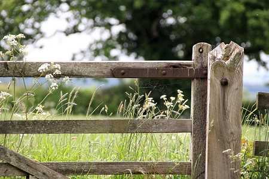
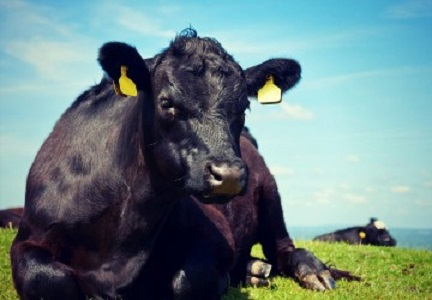
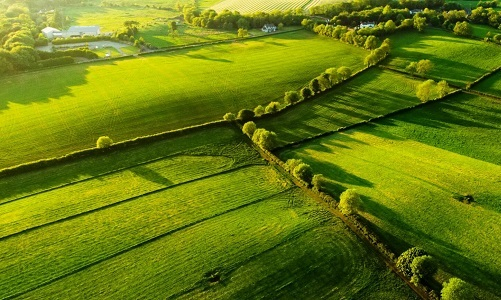
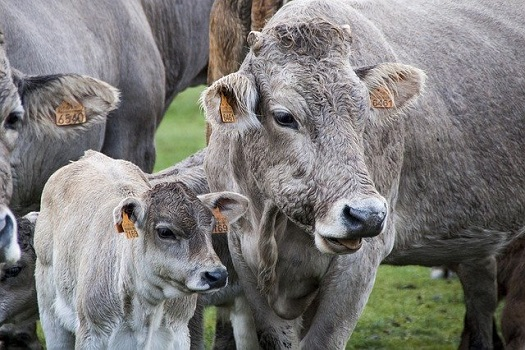

Welcome To Our Farm
We are absolutely thrilled to welcome visitors to the farm and we are equally enthusiastic for all our website views. COVID has reduced our ability to interact with our customers and it has limited your ability to gather information about animals you want to add to your stock. In our business we are used to using all five sense to judge the quality and potential of an animal as well as the care and attention they have received.
Selecting purebred cattle to boost the rating of a herd is an art form and we are hoping with this new website we can begin to bridge the gap between our farm and yours. Please take a minute to leave your contact details and some information on what you are seeking and we can keep you updated on our latest arrivals and long-term strategy.


Breeding Program
The beef programme revolves around buying the best young bulls in each breed from performance test stations, on farm, at shows and sales annually. There is a comprehensive range of beef bulls in all breeds covering everything from the dairy market, replacement market, weanling export and beef finishing markets. See our beef sires section here for a full breakdown on the bulls within each breed.
The aim of Bush Farm is simple, to facilitate the improvement of the genetic merit of the Irish cattle herd by providing the best available genetics. The resultant progeny will result in increased efficiencies and ultimately delivering healthier, better production and more profitable livestock to the farmer.
Grasslands of the Southeast
If there are two things Ireland has no shortage of, they are grass and rain. It is not for nothing that the country is known throughout the world as the Emerald. In the "Sunny South East" we have the advantge of the mildest climate in the country and our cattle enjoy living out on the land accept for the coledest weeks in January and February.
Semi-natural grasslands are hugely important reservoirs for biodiversity, supporting a diverse range of plant and animal species. They also perform a wide range of other ecosystem services such as healthy soil, climate regulation, flood attenuation, etc. In Ireland we are lucky to have large areas of semi-natural grassland, including six types which are listed for protection on the EU Habitats Directive


Top Quality Purebred Cattle
We believe the tastiest and healthiest beef is produced from animals reared in the most natural way.
Our native breed beef cattle graze in herds and enjoy a low-stress environment and a diet of native and herb enriched pastures to bring out the tender meadow flavours of our beef. Our lean, 100% grass-fed and grass-finished beef is high in omega-3 oils and rich in vitamins and minerals.
Beef from grass-fed, grass-finished cattle is healthier than beef from grain-fed cattle due to higher levels of Vitamin A, Vitamin E, CLAs; Omega-3 and Omega-6 fatty acids, and dietary protein.
Take A Closer Look at The Farm